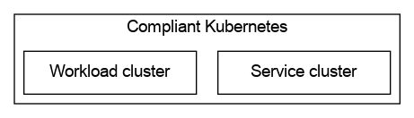

Architecture¶
Below we present the architecture of Compliant Kubernetes, using the C4 model.
For the nitty-gritty details, see Architectural Decision Records.
Level 1: System Context¶
Let us start with the system context.

Compliance imposes restrictions on all levels of the tech stack. Your compliance focus should mostly lie on your application. Compliant Kubernetes ensures that the platform hosting your application is compliant. Finally, you need the whole software stack on a hardware that is managed in a compliant way, either via an ISO 27001-certified cloud provider or using on-prem hardware.
Level 2: Clusters¶
Most regulations require logging to a tamper-proof environment. This is usually interpreted as an attacker gaining access to your application should not be able to delete logs showing their attack and the harm caused by their attack.
To achieve this, Compliant Kubernetes is implemented as two Kubernetes clusters
- A workload cluster, which hosts your application, and
- A service cluster, which hosts services for monitoring, logging and vulnerability management.

Level 3: Individual Components¶
Click on the diagram below to see the nuts-and-bolts of Compliant Kubernetes.

Note
Due to technical limitations, some compliance-related components still need to run in the workload cluster. These are visible when inspecting the workload cluster, for example, via the Kubernetes API. Currently, these components are:
- Falco, for intrusion detection;
- Prometheus, for collecting metrics;
- Fluentd, for collecting logs;
- OpenPolicyAgent, for enforcing Kubernetes API policies.
Note that, the logs, metrics and alerts produced by these components are immediately pushed into the tamper-proof logging environment, hence this technical limitation does not weaken compliance.
Level 3: Authentication¶
Click on the diagram below to see the nuts-and-bolts of Compliant Kubernetes authentication.

Level 3: Backup¶
Click on the diagram below to see the nuts-and-bolts of Compliant Kubernetes backup.

Level 3: Metrics and Metrics-based Alerting¶

Level 3: Logs and Log-based Alerting¶

Level 3: Access Control¶